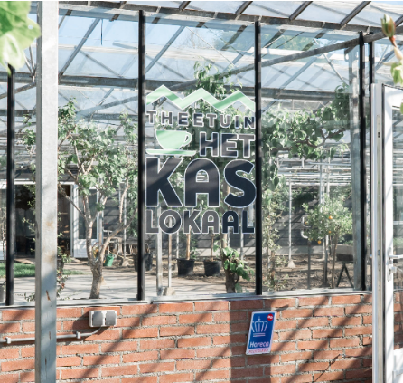

Dit ben ik. Ik geniet van lachen en het creëren van een gezellige sfeer, waar ik ook ga. Als ik gemeenschappelijke interesses met anderen deel, heb ik meteen een klik met hen. In nieuwe situaties kan ik heel stil en verlegen zijn, wat eng en overweldigend kan zijn. Daardoor heb ik soms moeite om initiatief te nemen. Zoals ik al eerder zei, heb ik dyslexie. Ik kreeg de diagnose in de zesde klas en kreeg hulp tot de achtste klas. Elke woensdag werd ik uit de klas gehaald om hulp te krijgen. Op de middelbare school kreeg ik geen speciale hulp, maar kreeg ik extra tijd voor toetsen, en mijn leraren waren minder streng op het gebied van spelfouten. Ik hou van lezen, maar het kan een beetje een uitdaging zijn in het Nederlands. Ik vind het echter gemakkelijker om in het Engels te lezen, omdat ik de neiging heb om boeken te lezen die in die taal zijn geschreven. Spelling is voor mij echt een worsteling. Ik vergeet vaak hoe ik woorden moet spellen, niet omdat ik lui of onintelligent ben, maar omdat ik het echt niet weet. Desondanks ben ik een energiek en enthousiast persoon. Als ik me ergens voor inzet, doe ik er alles aan en kan ik me erg op mijn werk concentreren. Mijn ambitie is om later een stressvrij leven te kunnen leiden, waarbij ik genoeg geld heb om normaal te kunnen leven zonder elke maand te hoeven worstelen om de huur of de rekeningen te kunnen betalen.
Ik heb ontzettend veel hobby's! Zoals je kunt zien op de foto's, ben ik vooral creatief bezig. Ik schilder, teken, klei, haak en nog veel meer. Tekenen is iets wat ik het vaakst doe, het is makkelijk en je hebt alleen een potlood nodig en je fantasie. Als ik schilder, kies ik vaak voor abstracte kunst, omdat ik verf daar het beste voor vind. Ik hou ervan om niet te veel na te denken en gewoon wat kleur op een canvas te gooien! Hoewel ik niet vaak klei, als ik dat doe, maak ik meestal paddenstoelen. Ik heb zelfs oorbellen gemaakt van klei! Eigenlijk heb ik van alles wel eens geprobeerd wat creatief is, en ik vind het altijd erg leuk om te doen. Daarnaast speel ik ook graag piano, ik ben geen professional, maar ik kan wel een paar liedjes spelen. Ik oefen elke dag om beter te worden. Ik ben ook dol op lezen. Ik lees eigenlijk altijd in het Engels en meestal online. Als ik fysieke boeken lees, zijn het vaak comics of manga's. Het genre boeken dat ik het leukst vind, is horror, psychologie en thrillers. Ik kan er geen genoeg van krijgen!
Mijn allereerste baan was een krantenwijk die ik samen met mijn moeder deed toen ik 11 jaar was (in 2017). Elke dinsdag of woensdag reden we met de auto door een nabijgelegen wijk om kranten te bezorgen. Ik vond dit erg leuk en heb het een jaar lang gedaan.
Daarna heb ik in de zomer van 2018 bij Het Kaslokaal gewerkt toen ik 11-12 jaar oud was. Meestal deed ik de afwas en dat vond ik prima. Dit was mijn eerste baan in de horeca en het was nieuw voor me, maar ik vond het erg leuk!
Toen heb ik negen maanden niet gewerkt, maar daarna kreeg ik een schoonmaakbaan aangeboden. Ik zat al bij een schaakclub en ze hadden iemand nodig om het gebouw op zaterdagen schoon te maken. Ik heb dit van 2019 tot 2022 gedaan. Mijn taken waren stofzuigen, de bar schoonmaken, tafels en stoelen rechtzetten en toiletten schoonmaken. Ik kreeg veel verantwoordelijkheid omdat ik een sleutel had en elke week netjes moest schoonmaken.
In 2020 begon ik ook te werken bij Mindi Mundi. Ik wilde graag een tweede baan en het was dichtbij. Ik heb er gewerkt tot januari 2023. Dit was ook weer een horecagelegenheid en ik heb er veel geleerd. In het begin deed ik meestal de afwas, maar de laatste twee jaar stond ik altijd achter de bestelbar. Hier moest ik vriendelijk met klanten omgaan en met geld omgaan. Mijn baas was altijd blij met me en ik vond het werk ook leuk.
Nu werk ik bij Jungle Books, het winkeltje waar je doorheen loopt als je het Kaslokaal binnen wilt. Ze verkopen voornamelijk boeken en planten. Het is een klein winkeltje met twee eigenaren en twee medewerkers. Ik werk er sinds januari 2023 en vind het erg leuk. Het afrekensysteem (het scannen van barcodes en optellen van prijzen) is zelfgemaakt door een van de eigenaren die ook een opleiding tot softwareontwikkelaar heeft gedaan. Dit geeft me veel inspiratie voor wat ik allemaal kan gaan maken.